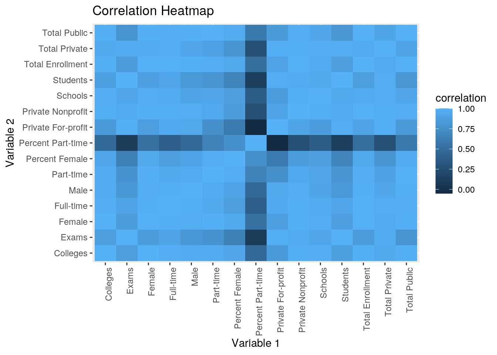
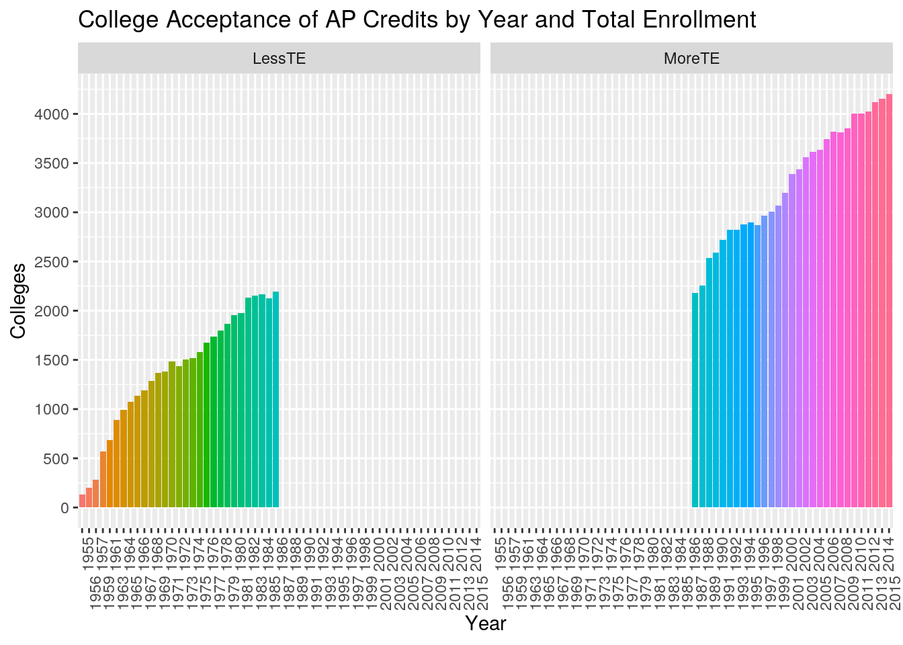
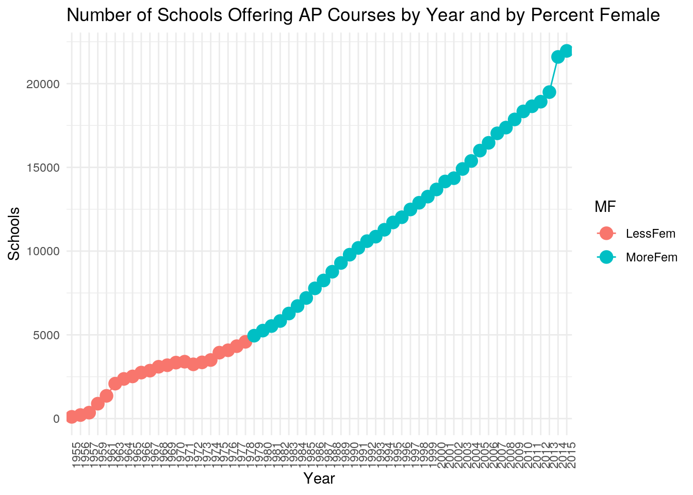
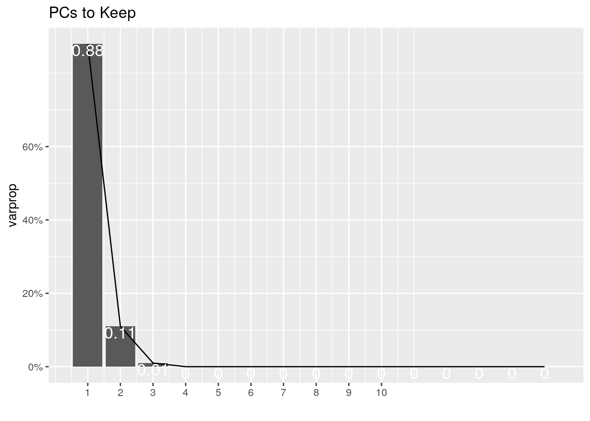
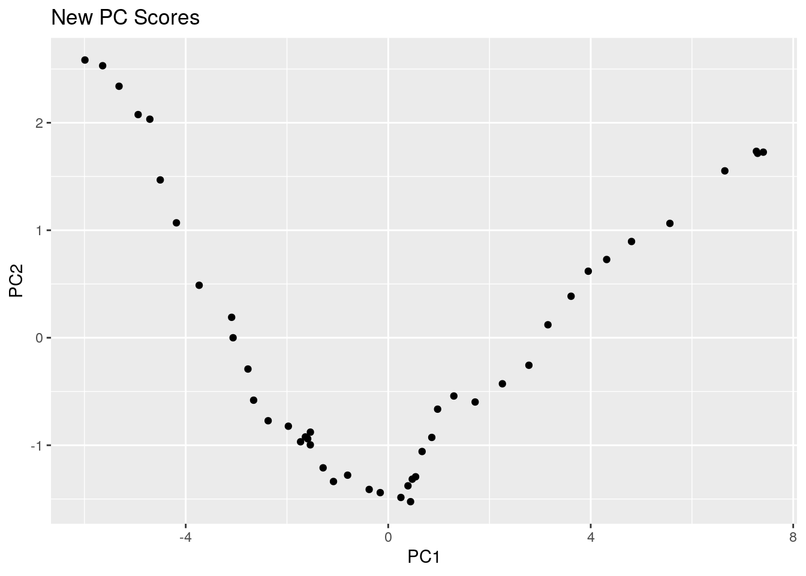
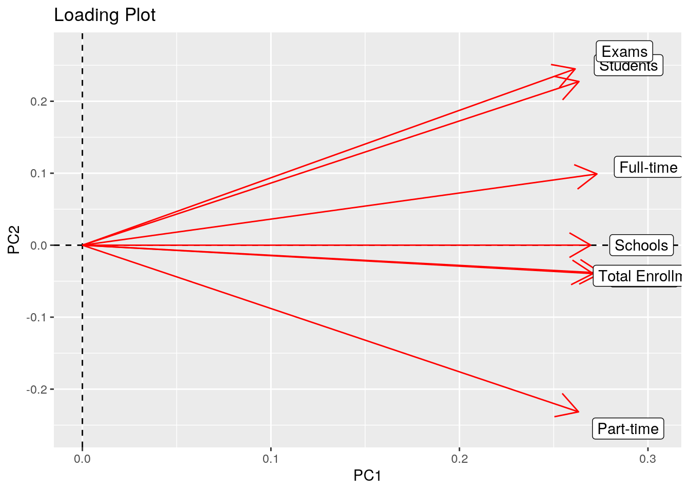
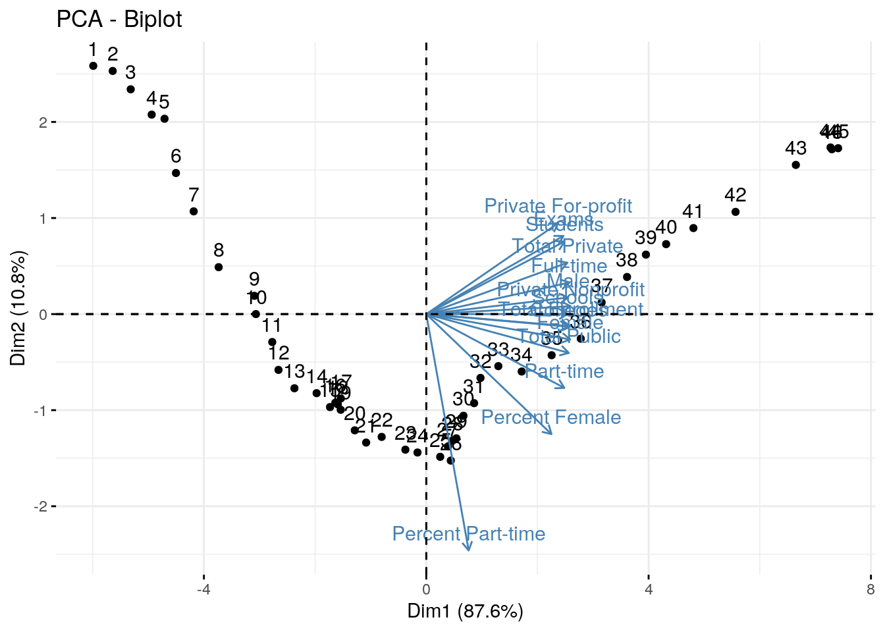

library(tidyverse)## ── Attaching packages ──────── tidyverse 1.3.0 ──## ✓ ggplot2 3.3.2 ✓ purrr 0.3.4
## ✓ tibble 3.0.3 ✓ dplyr 1.0.1
## ✓ tidyr 1.1.1 ✓ stringr 1.4.0
## ✓ readr 1.3.1 ✓ forcats 0.5.0## ── Conflicts ─────────── tidyverse_conflicts() ──
## x dplyr::filter() masks stats::filter()
## x dplyr::lag() masks stats::lag()Introduction: The first dataset was acquired from College Board and includes the number of schools offering AP courses, the number of students taking AP courses, the number of AP exams taken, and the number of colleges accepting AP credit from 1955 to 2015. The second dataset was acquired from the National Center for Education Statistics and includes information about college enrollment from 1947 to projected numbers of 2023 in the U.S. Its variables cover total college enrollment, full-time college students, part-time college students, percent of students doing part time, male college students, female college students, percent of students who are female, total public college enrollment, total private college enrollment, enrollment in non-profit private colleges, and enrollment in for-profit private colleges. These datasets can be joined by year, and it could be interesting to look into any relationship between the availability and acceptance of AP courses and various factors of college enrollment. For example, I would expect as the number of students taking AP exams increases, so might the total enrollment of students in colleges that year.
library(readxl)
APData <- read_excel("APData.xls")## New names:
## * `` -> ...1
## * `` -> ...2
## * `` -> ...3
## * `` -> ...4
## * `` -> ...5
## * ...ColData <- read_excel("ColData.xlsx")
APData2 <- APData %>% select(-c(4, 7:23)) %>% rename(c("Year" = "...1", "Schools" = "...2", "Students" = "...3", "Exams" = "...5", "Colleges" = "...6")) %>% slice(-c(1, 64:69)) %>% na.omit() %>% separate(Year, into= c("Year", NA), sep=4, convert=T) %>% mutate(Schools = as.numeric(Schools), Students = as.numeric(Students), Exams = as.numeric(Exams), Colleges = as.numeric(Colleges))## Warning: Problem with `mutate()` input `Schools`.
## x NAs introduced by coercion
## ℹ Input `Schools` is `as.numeric(Schools)`.## Warning in mask$eval_all_mutate(dots[[i]]): NAs introduced by coercion## Warning: Problem with `mutate()` input `Students`.
## x NAs introduced by coercion
## ℹ Input `Students` is `as.numeric(Students)`.## Warning in mask$eval_all_mutate(dots[[i]]): NAs introduced by coercion## Warning: Problem with `mutate()` input `Exams`.
## x NAs introduced by coercion
## ℹ Input `Exams` is `as.numeric(Exams)`.## Warning in mask$eval_all_mutate(dots[[i]]): NAs introduced by coercion## Warning: Problem with `mutate()` input `Colleges`.
## x NAs introduced by coercion
## ℹ Input `Colleges` is `as.numeric(Colleges)`.## Warning in mask$eval_all_mutate(dots[[i]]): NAs introduced by coercionColData2 <- ColData %>% mutate(Year = as.character(Year))Since the datasets were already tidy, I used the AP Data to demonstrate the use of pivot_longer and pivot_wider. After pivoting longer, a 'Names' column was created containing whether the value in the 'Values' column corresponded to 'Schools' or 'Students'. The same was done for 'Exams' and 'Colleges'. When pivoted wider, the variables of schools and students were given their own columns again with corresponding values listed below. The same happened for the exams and colleges variables.
APData3 <- APData2 %>% pivot_longer(c("Schools", "Students"), names_to="Names", values_to="Values") %>% pivot_longer(c("Exams", "Colleges"), names_to="Names1", values_to="Values1") %>% glimpse()## Rows: 248
## Columns: 5
## $ Year <chr> "1955", "1955", "1955", "1955", "1956", "1956", "1956", "1956…
## $ Names <chr> "Schools", "Schools", "Students", "Students", "Schools", "Sch…
## $ Values <dbl> 104, 104, 1229, 1229, 212, 212, 2068, 2068, 355, 355, 3715, 3…
## $ Names1 <chr> "Exams", "Colleges", "Exams", "Colleges", "Exams", "Colleges"…
## $ Values1 <dbl> 2199, 130, 2199, 130, 3772, 201, 3772, 201, 6800, 279, 6800, …APData3 %>% pivot_wider(names_from="Names", values_from="Values") %>% pivot_wider(names_from="Names1", values_from="Values1") %>% glimpse()## Rows: 62
## Columns: 5
## $ Year <chr> "1955", "1956", "1957", "1958", "1959", "1960", "1961", "196…
## $ Schools <dbl> 104, 212, 355, 560, 890, 1126, 1358, 1681, 2086, 2369, 2518,…
## $ Students <dbl> 1229, 2068, 3715, 5862, 10531, 13283, 16255, 21769, 28874, 3…
## $ Exams <dbl> 2199, 3772, 6800, 8265, 14158, 17603, 21451, 28762, 37829, 4…
## $ Colleges <dbl> 130, 201, 279, 391, 567, 617, 683, 765, 888, 994, 1076, 1133…Joining/Merging: I will perform an inner join so that it will drop rows without a match so there are no NAs introduced. I joined by year, so only the years with a match in each dataset will remain. Since AP Data didn't start until 1955, the data for the years 1947-1954 in College Data was dropped; this would only be an issue if I was specifically looking at these years and not trends over time as a whole. The AP Data only went up to 2015, so the data for years 2016-2019 and the projected data for 2020-2023 from the College Data was dropped. This should not be a major issue either as there is still over 50 years of data to analyze in the joint dataset.
fuldat <- inner_join(APData2, ColData2, by="Year","Year")Wrangling: First, I used filter() to only show when the number of exams offerred was greater than the median, then I used summarize_all to find the mean for each variable; I repeated this with exams less than the median, and the mean for each variable was significantly lower. Second, I generated a new variable that is a function of two other variables to show the Ratio of NonProfit to For-Profit Private Colleges for a given year. Third, I selected every column but the first since it just contains the years then used summarize_if() to select only numeric variables and looked at each of their standard deviations and means. Next, I created a categorical variable where MoreFem represents when the percent female was over 50 and LessFem represents when it was less than or equal to 50. I then grouped by this new variable and year to look at the minimum total enrollment followed by the maximum, arranged by descending year. I then grouped by the variable I created and summarized the mean for Total Private, to see it is much higher when there are more females.
fuldat %>% filter(Exams>median(Exams)) %>% summarize_all(mean)## Warning in mean.default(Year): argument is not numeric or logical: returning NA## # A tibble: 1 x 16
## Year Schools Students Exams Colleges `Total Enrollme… `Full-time`
## <dbl> <dbl> <dbl> <dbl> <dbl> <dbl> <dbl>
## 1 NA 14397. 1140434. 1.96e6 3317. 16678791. 9980350.
## # … with 9 more variables: `Part-time` <dbl>, `Percent Part-time` <dbl>,
## # Male <dbl>, Female <dbl>, `Percent Female` <dbl>, `Total Public` <dbl>,
## # `Total Private` <dbl>, `Private Nonprofit` <dbl>, `Private
## # For-profit` <dbl>fuldat %>% filter(Exams<median(Exams)) %>% summarize_all(mean)## Warning in mean.default(Year): argument is not numeric or logical: returning NA## # A tibble: 1 x 16
## Year Schools Students Exams Colleges `Total Enrollme… `Full-time`
## <dbl> <dbl> <dbl> <dbl> <dbl> <dbl> <dbl>
## 1 NA 3623. 83402. 1.12e5 1396. 8645322. NA
## # … with 9 more variables: `Part-time` <dbl>, `Percent Part-time` <dbl>,
## # Male <dbl>, Female <dbl>, `Percent Female` <dbl>, `Total Public` <dbl>,
## # `Total Private` <dbl>, `Private Nonprofit` <dbl>, `Private
## # For-profit` <dbl>fuldat %>% mutate('NonProfit/ForProfit Ratio'= `Private Nonprofit`/`Private For-profit`) %>% na.omit()## # A tibble: 46 x 17
## Year Schools Students Exams Colleges `Total Enrollme… `Full-time`
## <chr> <dbl> <dbl> <dbl> <dbl> <dbl> <dbl>
## 1 1967 2863 46917 60674 1193 6911748 4793128
## 2 1968 3095 53363 69418 1288 7513091 5210155
## 3 1969 3186 55442 71495 1368 8004660 5498883
## 4 1970 3342 57850 74409 1382 8580887 5816290
## 5 1971 3397 58828 75199 1483 8948644 6077232
## 6 1972 3240 54778 70651 1437 9214860 6072389
## 7 1973 3357 60863 79036 1507 9602123 6189493
## 8 1974 3498 65635 85786 1517 10223729 6370273
## 9 1975 3937 75651 98898 1580 11184859 6841334
## 10 1976 4079 82728 108870 1672 11012137 6717058
## # … with 36 more rows, and 10 more variables: `Part-time` <dbl>, `Percent
## # Part-time` <dbl>, Male <dbl>, Female <dbl>, `Percent Female` <dbl>, `Total
## # Public` <dbl>, `Total Private` <dbl>, `Private Nonprofit` <dbl>, `Private
## # For-profit` <dbl>, `NonProfit/ForProfit Ratio` <dbl>fuldat %>% select(-1) %>% summarize_if(is.numeric, sd, na.rm=T)## # A tibble: 1 x 15
## Schools Students Exams Colleges `Total Enrollme… `Full-time` `Part-time`
## <dbl> <dbl> <dbl> <dbl> <dbl> <dbl> <dbl>
## 1 6235. 745651. 1.33e6 1138. 5100238. 2776173. 1970189.
## # … with 8 more variables: `Percent Part-time` <dbl>, Male <dbl>, Female <dbl>,
## # `Percent Female` <dbl>, `Total Public` <dbl>, `Total Private` <dbl>,
## # `Private Nonprofit` <dbl>, `Private For-profit` <dbl>fuldat %>% select(-1) %>% summarize_if(is.numeric, mean, na.rm=T)## # A tibble: 1 x 15
## Schools Students Exams Colleges `Total Enrollme… `Full-time` `Part-time`
## <dbl> <dbl> <dbl> <dbl> <dbl> <dbl> <dbl>
## 1 9010. 611918. 1.03e6 2356. 12662057. 7996775. 5194212.
## # … with 8 more variables: `Percent Part-time` <dbl>, Male <dbl>, Female <dbl>,
## # `Percent Female` <dbl>, `Total Public` <dbl>, `Total Private` <dbl>,
## # `Private Nonprofit` <dbl>, `Private For-profit` <dbl>fuldat2 <- fuldat %>% mutate(MF = case_when(`Percent Female` <= 50 ~ "LessFem",
'Percent Female' > 50 ~ "MoreFem"))
fuldat2 %>% group_by(Year, MF) %>% summarize(min(`Total Enrollment`)) %>% arrange(desc(Year))## `summarise()` regrouping output by 'Year' (override with `.groups` argument)## # A tibble: 58 x 3
## # Groups: Year [58]
## Year MF `min(\`Total Enrollment\`)`
## <chr> <chr> <dbl>
## 1 2015 MoreFem 21266000
## 2 2014 MoreFem 21011000
## 3 2013 MoreFem 20597000
## 4 2012 MoreFem 20642819
## 5 2011 MoreFem 20994113
## 6 2010 MoreFem 21016126
## 7 2009 MoreFem 20427711
## 8 2008 MoreFem 19102814
## 9 2007 MoreFem 18248128
## 10 2006 MoreFem 17758870
## # … with 48 more rowsfuldat2 %>% group_by(Year, MF) %>% summarize(max(`Total Enrollment`))## `summarise()` regrouping output by 'Year' (override with `.groups` argument)## # A tibble: 58 x 3
## # Groups: Year [58]
## Year MF `max(\`Total Enrollment\`)`
## <chr> <chr> <dbl>
## 1 1955 LessFem 2653034
## 2 1956 LessFem 2918212
## 3 1957 LessFem 3323783
## 4 1959 LessFem 3639847
## 5 1961 LessFem 4145065
## 6 1963 LessFem 4779609
## 7 1964 LessFem 5280020
## 8 1965 LessFem 5920864
## 9 1966 LessFem 6389872
## 10 1967 LessFem 6911748
## # … with 48 more rowsfuldat2 %>% group_by(MF) %>% summarize(median(`Total Private`))## `summarise()` ungrouping output (override with `.groups` argument)## # A tibble: 2 x 2
## MF `median(\`Total Private\`)`
## <chr> <dbl>
## 1 LessFem 2095720
## 2 MoreFem 3306215cormat <- fuldat %>% select_if(is.numeric) %>% cor(use="pair")
cormat## Schools Students Exams Colleges Total Enrollment
## Schools 1.0000000 0.9341483 0.9232631 0.9816280 0.9560775
## Students 0.9341483 1.0000000 0.9994987 0.8747398 0.8616822
## Exams 0.9232631 0.9994987 1.0000000 0.8605831 0.8482708
## Colleges 0.9816280 0.8747398 0.8605831 1.0000000 0.9847366
## Total Enrollment 0.9560775 0.8616822 0.8482708 0.9847366 1.0000000
## Full-time 0.9594725 0.9228782 0.9140940 0.9736906 0.9907724
## Part-time 0.9243306 0.8012398 0.7859392 0.9603250 0.9815935
## Percent Part-time 0.3803818 0.1244195 0.1018707 0.4634161 0.5094398
## Male 0.9131213 0.8291185 0.8170797 0.9567091 0.9878356
## Female 0.9700487 0.8708088 0.8567677 0.9899918 0.9961561
## Percent Female 0.8708464 0.6693679 0.6482074 0.9305108 0.9350313
## Total Public 0.9313379 0.8061406 0.7906430 0.9752588 0.9945058
## Total Private 0.9667820 0.9695323 0.9631585 0.9484891 0.9509894
## Private Nonprofit 0.9845393 0.9625395 0.9556155 0.9864172 0.9894873
## Private For-profit 0.8591853 0.9734758 0.9758505 0.8446340 0.8949247
## Full-time Part-time Percent Part-time Male Female
## Schools 0.9594725 0.9243306 0.3803818 0.9131213 0.9700487
## Students 0.9228782 0.8012398 0.1244195 0.8291185 0.8708088
## Exams 0.9140940 0.7859392 0.1018707 0.8170797 0.8567677
## Colleges 0.9736906 0.9603250 0.4634161 0.9567091 0.9899918
## Total Enrollment 0.9907724 0.9815935 0.5094398 0.9878356 0.9961561
## Full-time 1.0000000 0.9466507 0.3904788 0.9876658 0.9827222
## Part-time 0.9466507 1.0000000 0.6610654 0.9571480 0.9849151
## Percent Part-time 0.3904788 0.6610654 1.0000000 0.4641652 0.5283932
## Male 0.9876658 0.9571480 0.4641652 1.0000000 0.9704171
## Female 0.9827222 0.9849151 0.5283932 0.9704171 1.0000000
## Percent Female 0.8614081 0.9691165 0.7674647 0.9041509 0.9424252
## Total Public 0.9724836 0.9921769 0.5877919 0.9854458 0.9889719
## Total Private 0.9744515 0.8861431 0.2586552 0.9304483 0.9523884
## Private Nonprofit 0.9867049 0.9391175 0.2556249 0.9669293 0.9888167
## Private For-profit 0.9495579 0.7683480 -0.0511254 0.9343203 0.8670526
## Percent Female Total Public Total Private Private Nonprofit
## Schools 0.8708464 0.9313379 0.9667820 0.9845393
## Students 0.6693679 0.8061406 0.9695323 0.9625395
## Exams 0.6482074 0.7906430 0.9631585 0.9556155
## Colleges 0.9305108 0.9752588 0.9484891 0.9864172
## Total Enrollment 0.9350313 0.9945058 0.9509894 0.9894873
## Full-time 0.8614081 0.9724836 0.9744515 0.9867049
## Part-time 0.9691165 0.9921769 0.8861431 0.9391175
## Percent Part-time 0.7674647 0.5877919 0.2586552 0.2556249
## Male 0.9041509 0.9854458 0.9304483 0.9669293
## Female 0.9424252 0.9889719 0.9523884 0.9888167
## Percent Female 1.0000000 0.9595705 0.8015426 0.8545854
## Total Public 0.9595705 1.0000000 0.9133945 0.9731221
## Total Private 0.8015426 0.9133945 1.0000000 0.9765736
## Private Nonprofit 0.8545854 0.9731221 0.9765736 1.0000000
## Private For-profit 0.5987618 0.8401139 0.9783480 0.9108930
## Private For-profit
## Schools 0.8591853
## Students 0.9734758
## Exams 0.9758505
## Colleges 0.8446340
## Total Enrollment 0.8949247
## Full-time 0.9495579
## Part-time 0.7683480
## Percent Part-time -0.0511254
## Male 0.9343203
## Female 0.8670526
## Percent Female 0.5987618
## Total Public 0.8401139
## Total Private 0.9783480
## Private Nonprofit 0.9108930
## Private For-profit 1.0000000Correlation Heatmap: Percent-Part Time seems to have the least correlation with other variables, as it has fairly dark squares across the whole map. Other than that, the correlations are pretty consistent, with a few squares seeming to be darker (less correlated), like Percent Female and Private Non-Profit or Exams and Percent Female. It seems that, apart from Percent Part-Time, all of the numeric variables have similar correlations with one another.
library(ggplot2)
tidycor <- cormat %>% as.data.frame %>% rownames_to_column("Variable 1") %>%
pivot_longer(-1,names_to="Variable 2",values_to="correlation")
tidycor %>% ggplot(aes(`Variable 1`,`Variable 2`,fill= correlation))+geom_tile()+theme(axis.text.x = element_text(angle=90, hjust=1)) + ggtitle("Correlation Heatmap")
Visualization 2: I created a categorical variable that separates into More TE, when total enrollment is above the median, and Less TE, when total enrollment is below or equal to the median. I then created a plot where the x-axis shows the Year and the y-axis shows the number of colleges accepting AP credit. They are then facet wrapped by the new TE variable. As the years go on, you can clearly see a steady increase in the amount of colleges taking credits. Looking at when there was less total enrollment, it seems to start with a slow rise then begins rising at an increasing rate. Looking at when there was more total enrollment, there is a decent size dip in colleges around the 1990s, so maybe there was a drop in credit acceptance during those years.
fuldat0 <- fuldat %>% mutate(TE = case_when(`Total Enrollment` <= median(`Total Enrollment`) ~ "LessTE", `Total Enrollment` > median(`Total Enrollment`) ~ "MoreTE"))
ggplot(fuldat0, aes(Year))+ geom_bar(aes(y=Colleges,fill=Year), stat="summary", fun=mean) +
theme(axis.text.x = element_text(angle=90, hjust=1), legend.position="none") + facet_wrap(~TE) + ggtitle("College Acceptance of AP Credits by Year and Total Enrollment") + scale_y_continuous(breaks=seq(0,4000,500)) + scale_x_discrete(guide = guide_axis(n.dodge = 2))
Visualization 3: I used the categorical variable created earlier out of Percent Female; it is either LessFem, when percent female is less than or equal to 50, or MoreFem, when percent female is over 50. We can see that it was consistently less female until the late 1970s but has been consistently more female ever since. The number of schools offering AP courses has steadily climbed from 1955 to 2015. In the mid-60s to mid-70s, there was a bit of a drop in the rate of increasing, and there was a sudden spike in Schools around 2013-2015.
fuldat2 <- fuldat %>% mutate(MF = case_when(`Percent Female` <= 50 ~ "LessFem",
`Percent Female` > 50 ~ "MoreFem"))
ggplot(data = fuldat2, aes(x = Year, y = Schools, color = MF)) +
geom_point(size=4) + geom_line(aes(group=MF)) + theme_minimal() +
theme(axis.text.x = element_text(angle=90, hjust=1)) +ggtitle("Number of Schools Offering AP Courses by Year and by Percent Female") 
PCA:
ful_nums<- fuldat %>% select_if(is.numeric) %>% na.omit() %>% scale
rownames(ful_nums)<-fuldat$Name## Warning: Unknown or uninitialised column: `Name`.ful_pca<-princomp(ful_nums)
names(ful_pca)## [1] "sdev" "loadings" "center" "scale" "n.obs" "scores" "call"summary(ful_pca, loadings=T)## Importance of components:
## Comp.1 Comp.2 Comp.3 Comp.4 Comp.5
## Standard deviation 3.5847398 1.2611768 0.40950137 0.194463314 0.1177612238
## Proportion of Variance 0.8757282 0.1083942 0.01142786 0.002577089 0.0009450585
## Cumulative Proportion 0.8757282 0.9841224 0.99555023 0.998127317 0.9990723755
## Comp.6 Comp.7 Comp.8 Comp.9
## Standard deviation 0.0910051262 0.0565330231 3.759014e-02 2.484244e-02
## Proportion of Variance 0.0005643984 0.0002178003 9.629462e-05 4.205741e-05
## Cumulative Proportion 0.9996367739 0.9998545742 9.999509e-01 9.999929e-01
## Comp.10 Comp.11 Comp.12 Comp.13
## Standard deviation 9.677960e-03 3.183956e-03 1.992639e-08 5.195979e-09
## Proportion of Variance 6.382954e-06 6.908570e-07 2.705898e-17 1.839877e-18
## Cumulative Proportion 9.999993e-01 1.000000e+00 1.000000e+00 1.000000e+00
## Comp.14 Comp.15
## Standard deviation 0 0
## Proportion of Variance 0 0
## Cumulative Proportion 1 1
##
## Loadings:
## Comp.1 Comp.2 Comp.3 Comp.4 Comp.5 Comp.6 Comp.7 Comp.8
## Schools 0.270 0.484 0.365 0.466 0.456 0.284
## Students 0.263 0.227 0.186 0.341 -0.367 0.107 -0.111
## Exams 0.261 0.245 0.172 0.347 -0.471 -0.108
## Colleges 0.271 0.424 -0.184 0.197 -0.365 -0.732
## Total Enrollment 0.275 -0.104 -0.170
## Full-time 0.273 -0.261 -0.237 -0.132 0.199
## Part-time 0.263 -0.232 -0.104 0.133 0.243 -0.243 0.197
## Percent Part-time -0.741 -0.321 0.265 0.353 -0.167
## Male 0.270 -0.401 -0.475 0.137 0.112
## Female 0.274 -0.187 0.141
## Percent Female 0.239 -0.376 0.291 0.237 -0.546 -0.332 0.294
## Total Public 0.272 -0.122 -0.360 0.120
## Total Private 0.269 0.161 -0.138 0.291 -0.124 0.123 -0.230
## Private Nonprofit 0.275 0.138 -0.164 -0.598 0.439
## Private For-profit 0.251 0.285 -0.397 0.473 -0.229 0.393 0.134 -0.235
## Comp.9 Comp.10 Comp.11 Comp.12 Comp.13 Comp.14 Comp.15
## Schools 0.214
## Students -0.129 -0.742
## Exams -0.195 0.666
## Colleges
## Total Enrollment -0.120 0.494 0.656 0.123 -0.394
## Full-time 0.163 0.472 0.447 -0.362 0.373
## Part-time -0.515 -0.435 0.315 -0.256 0.263
## Percent Part-time 0.191 0.285
## Male 0.422 -0.445 -0.165 -0.135 0.248 -0.138
## Female -0.366 0.346 -0.361 -0.295 0.544 -0.303
## Percent Female 0.102 -0.394
## Total Public -0.246 0.131 -0.512 0.268 -0.562 0.150
## Total Private 0.185 -0.316 -0.514 -0.552
## Private Nonprofit 0.371 -0.131 0.215 0.139 0.309
## Private For-profit -0.137 0.223 0.145 0.321eigval<-ful_pca$sdev^2
varprop=round(eigval/sum(eigval), 2)
ggplot() + geom_bar(aes(y=varprop, x=1:15), stat="identity") + xlab("") + geom_path(aes(y=varprop, x=1:15)) +
geom_text(aes(x=1:15, y=varprop, label=round(varprop, 2)), vjust=1, col="white", size=5) +
scale_y_continuous(breaks=seq(0, .6, .2), labels = scales::percent) +
scale_x_continuous(breaks=1:10) + ggtitle("PCs to Keep")
eigval[1:15]## Comp.1 Comp.2 Comp.3 Comp.4 Comp.5 Comp.6
## 1.285036e+01 1.590567e+00 1.676914e-01 3.781598e-02 1.386771e-02 8.281933e-03
## Comp.7 Comp.8 Comp.9 Comp.10 Comp.11 Comp.12
## 3.195983e-03 1.413019e-03 6.171468e-04 9.366291e-05 1.013758e-05 3.970611e-16
## Comp.13 Comp.14 Comp.15
## 2.699820e-17 0.000000e+00 0.000000e+00For PCA, I will start cleaning the data by getting rid of the Year column so only the numeric variables remain and scaling the data so the mean is 0 and standard deviation is 1. I then run princomp() on the scaled data and summarize the results. I decide to keep 2 PCs based on the scree plot flattening/having an elbow after 2. The summary also tells us that 99% of the variation can be explained by the first two components, so 2 seems like a good choice. Kaiser's rule of choosing those with Eigen values greater than 1 also applies to only the first two components. PC1 has similar correlations (sign and magnitude) for all of the variables. PC2 is most correlated (though this time negatively) to Percent Part-Time by a significant amount, so a higher score on PC2 could mean a lower percent of part-time students.
fuldf<-data.frame(PC1=ful_pca$scores[, 1], PC2=ful_pca$scores[, 2])
ggplot(fuldf, aes(PC1, PC2)) + geom_point() + ggtitle("New PC Scores")
ful_pca$loadings[1:7, 1:2] %>% as.data.frame %>% rownames_to_column %>%
ggplot() + geom_hline(aes(yintercept=0), lty=2) +
geom_vline(aes(xintercept=0), lty=2) + ylab("PC2") + xlab("PC1") +
geom_segment(aes(x=0, y=0, xend=Comp.1, yend=Comp.2), arrow=arrow(), col="red") +
geom_label(aes(x=Comp.1*1.1, y=Comp.2*1.1, label=rowname)) + ggtitle("Loading Plot")
library(factoextra)## Welcome! Want to learn more? See two factoextra-related books at https://goo.gl/ve3WBafviz_pca_biplot(ful_pca)
The New PCs plot shows us the data in regards to the first 2 principle components. PC1 is doing the majority of the work as can be seen in the plot. The Loading plot tells us which vars contribute to which PCs, and the closer the angles between each vector represents a higher correlation. Here we can see that part-time is strongly negatively correlated with PC2, as seen in the summary above. Total Enrollment and Full Time have a weaker positive correlation with PC1 as seen in the summary as well.
## R version 3.6.1 (2019-07-05)
## Platform: x86_64-pc-linux-gnu (64-bit)
## Running under: Ubuntu 18.04.5 LTS
##
## Matrix products: default
## BLAS: /stor/system/opt/R/R-3.6.1/lib/R/lib/libRblas.so
## LAPACK: /stor/system/opt/R/R-3.6.1/lib/R/lib/libRlapack.so
##
## locale:
## [1] LC_CTYPE=en_US.UTF-8 LC_NUMERIC=C
## [3] LC_TIME=en_US.UTF-8 LC_COLLATE=en_US.UTF-8
## [5] LC_MONETARY=en_US.UTF-8 LC_MESSAGES=en_US.UTF-8
## [7] LC_PAPER=en_US.UTF-8 LC_NAME=C
## [9] LC_ADDRESS=C LC_TELEPHONE=C
## [11] LC_MEASUREMENT=en_US.UTF-8 LC_IDENTIFICATION=C
##
## attached base packages:
## [1] stats graphics grDevices utils datasets methods base
##
## other attached packages:
## [1] factoextra_1.0.7 readxl_1.3.1 forcats_0.5.0 stringr_1.4.0
## [5] dplyr_1.0.1 purrr_0.3.4 readr_1.3.1 tidyr_1.1.1
## [9] tibble_3.0.3 ggplot2_3.3.2 tidyverse_1.3.0
##
## loaded via a namespace (and not attached):
## [1] ggrepel_0.8.2 Rcpp_1.0.5 lubridate_1.7.9 assertthat_0.2.1
## [5] digest_0.6.25 utf8_1.1.4 R6_2.4.1 cellranger_1.1.0
## [9] backports_1.1.8 reprex_0.3.0 evaluate_0.14 httr_1.4.2
## [13] blogdown_0.20 pillar_1.4.6 rlang_0.4.7 curl_4.3
## [17] rstudioapi_0.11 data.table_1.13.0 car_3.0-8 blob_1.2.1
## [21] rmarkdown_2.3 labeling_0.3 foreign_0.8-71 munsell_0.5.0
## [25] broom_0.7.0 compiler_3.6.1 modelr_0.1.8 xfun_0.16
## [29] pkgconfig_2.0.3 htmltools_0.5.0 tidyselect_1.1.0 bookdown_0.20
## [33] rio_0.5.16 fansi_0.4.1 crayon_1.3.4 dbplyr_1.4.4
## [37] withr_2.2.0 ggpubr_0.4.0 grid_3.6.1 jsonlite_1.7.0
## [41] gtable_0.3.0 lifecycle_0.2.0 DBI_1.1.0 magrittr_1.5
## [45] scales_1.1.1 zip_2.1.0 carData_3.0-4 cli_2.0.2
## [49] stringi_1.5.3 farver_2.0.3 ggsignif_0.6.0 fs_1.5.0
## [53] xml2_1.3.2 ellipsis_0.3.1 generics_0.0.2 vctrs_0.3.2
## [57] openxlsx_4.1.5 tools_3.6.1 glue_1.4.2 hms_0.5.3
## [61] abind_1.4-5 yaml_2.2.1 colorspace_1.4-1 rstatix_0.6.0
## [65] rvest_0.3.6 knitr_1.29 haven_2.3.1## [1] "2020-12-11 15:38:59 CST"## sysname
## "Linux"
## release
## "4.15.0-117-generic"
## version
## "#118-Ubuntu SMP Fri Sep 4 20:02:41 UTC 2020"
## nodename
## "educcomp04.ccbb.utexas.edu"
## machine
## "x86_64"
## login
## "unknown"
## user
## "kee636"
## effective_user
## "kee636"